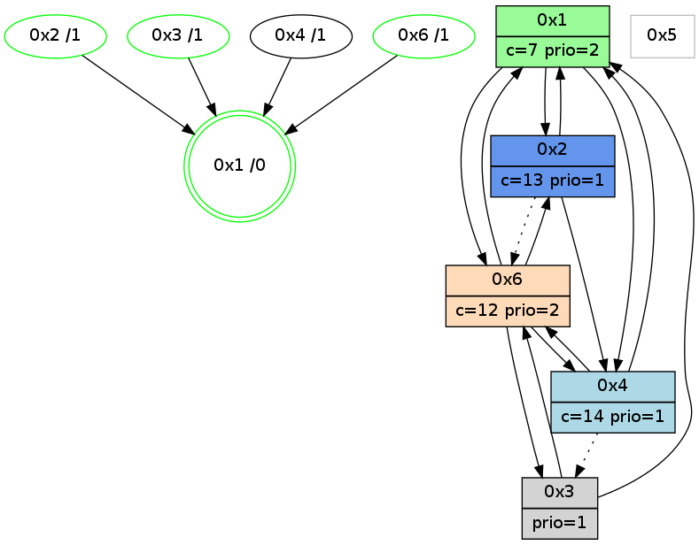

>> << IDX [start] -100 -25 -5 +0 +5 +25 +100 [1035.05316401]
 Previous packets
----------------------------------------------------------------------
1030.132081 beacon01(adaf) #0 coord=01,02,05,03,04,06 cycle=432.0ms assoc
-- color-indic=1 64 80 11
1030.142041 beacon02(adaf) #0 coord=01,02,05,03,04,06 cycle=432.0ms assoc 64 d1 ee
1030.152043 beacon05(adaf) #0 coord=01,02,05,03,04,06 cycle=432.0ms assoc 64 77 c4
1030.162043 beacon03(adaf) #0 coord=01,02,05,03,04,06 cycle=432.0ms assoc 64 eb e0
1030.172042 beacon04(adaf) #0 coord=01,02,05,03,04,06 cycle=432.0ms assoc 64 4d ca
1030.182044 beacon06(adaf) #0 coord=01,02,05,03,04,06 cycle=432.0ms assoc 64 39 d6
1030.193735 [Hello(4): seq=837 sym=1,6 asym=3 sysInfo=hasWarning stat=1:6,1,5,0/6:13,3,11,5/3:15,15,2,1]
1030.196335 [Color(2) seq=223 @0:0 color=13 prio=1 c=7,c,e;1,4,6,8,9,b]
1030.197961 [Color(3) seq=165 @0:0 prio=1 c=7,c,d;1,4,6,8,9,b,e]
1030.202046 [STC(1) #0.159 new-neigh,tree-change,inconsistent-stability,stable,to-color d=0]
1030.204336 [Color(1) seq=263 @0:0 color=7 prio=2 c=1,4,6,8,9,b,c,d;0,2,3,5,a,e]
----------------------------------------------------------------------
1030.624189 beacon01(adaf) #0 coord=01,02,05,03,04,06 cycle=432.0ms assoc
-- color-indic=1 64 cc a1
1030.634151 beacon02(adaf) #0 coord=01,02,05,03,04,06 cycle=432.0ms assoc 64 9d 5e
1030.644149 beacon05(adaf) #0 coord=01,02,05,03,04,06 cycle=432.0ms assoc 64 3b 74
1030.654150 beacon03(adaf) #0 coord=01,02,05,03,04,06 cycle=432.0ms assoc 64 a7 50
1030.664149 beacon04(adaf) #0 coord=01,02,05,03,04,06 cycle=432.0ms assoc 64 01 7a
1030.674151 beacon06(adaf) #0 coord=01,02,05,03,04,06 cycle=432.0ms assoc 64 75 66
1030.685701 [STC(4)->1 #0.159 new-neigh,tree-change,inconsistent-stability,to-color d=1]
1030.687788 [Hello(6): seq=750 sym=4,1,3 sysInfo=hasWarning stat=4:15,0,4,0/1:0,15,0,1/3:10,7,5,7]
1030.692527 [STC(6)->1 #0.159 new-neigh,tree-change,inconsistent-stability,stable,to-color d=1]
1030.695140 [Color(6) seq=222 @0:0 color=12 prio=2 c=7,d,e;1,4,6,8,9,b]
1030.696954 [STC(3)->1 #0.159 new-neigh,tree-change,inconsistent-stability,stable,to-color d=1]
1030.703024 [STC(2)->1 #0.159 new-neigh,tree-change,inconsistent-stability,stable,to-color d=1]
1030.704433 [Hello(1): seq=737 sym=2,4,6,3 sysInfo=hasWarning,coloring-mode-on,ColoringModeRequestCalled stat=2:5,5,11,3/4:12,0,8,0/6:3,0,2,4/3:0,1,0,0]
----------------------------------------------------------------------
1031.116296 beacon01(adaf) #0 coord=01,02,05,03,04,06 cycle=432.0ms assoc
-- color-indic=1 64 08 ce
1031.126257 beacon02(adaf) #0 coord=01,02,05,03,04,06 cycle=432.0ms assoc 64 59 31
1031.136259 beacon05(adaf) #0 coord=01,02,05,03,04,06 cycle=432.0ms assoc 64 ff 1b
1031.146257 beacon03(adaf) #0 coord=01,02,05,03,04,06 cycle=432.0ms assoc 64 63 3f
1031.156258 beacon04(adaf) #0 coord=01,02,05,03,04,06 cycle=432.0ms assoc 64 c5 15
1031.166257 beacon06(adaf) #0 coord=01,02,05,03,04,06 cycle=432.0ms assoc 64 b1 09
1031.177967 [Hello(4): seq=838 sym=1,6 asym=3 sysInfo=hasWarning stat=1:7,2,6,0/6:14,4,12,5/3:0,0,3,1]
1031.179865 [Color(1) seq=264 @0:0 color=7 prio=2 c=1,4,6,8,9,b,c,d;0,2,3,5,a,e]
1031.182189 [Color(3) seq=166 @0:0 prio=1 c=7,c,d;1,4,6,8,9,b,e]
1031.184231 [Color(2) seq=224 @0:0 color=13 prio=1 c=7,c,e;1,4,6,8,9,b]
----------------------------------------------------------------------
1031.608404 beacon01(adaf) #0 coord=01,02,05,03,04,06 cycle=432.0ms assoc
-- color-indic=1 64 45 c9
1031.618366 beacon02(adaf) #0 coord=01,02,05,03,04,06 cycle=432.0ms assoc 64 14 36
1031.628365 beacon05(adaf) #0 coord=01,02,05,03,04,06 cycle=432.0ms assoc 64 b2 1c
1031.638364 beacon03(adaf) #0 coord=01,02,05,03,04,06 cycle=432.0ms assoc 64 2e 38
1031.648365 beacon04(adaf) #0 coord=01,02,05,03,04,06 cycle=432.0ms assoc 64 88 12
1031.658366 beacon06(adaf) #0 coord=01,02,05,03,04,06 cycle=432.0ms assoc 64 fc 0e
1031.670089 [Hello(3): seq=836 sym=6,1 sysInfo=hasWarning stat=6:10,8,7,3/1:8,2,15,1]
1031.672481 [Hello(6): seq=751 sym=4,1,3 sysInfo=hasWarning stat=4:0,0,5,0/1:1,0,0,1/3:10,8,6,7]
1031.674509 [Hello(1): seq=738 sym=2,4,6,3 sysInfo=hasWarning,coloring-mode-on,ColoringModeRequestCalled stat=2:5,6,11,3/4:12,0,8,0/6:3,0,2,4/3:0,2,0,0]
1031.677232 [Color(6) seq=223 @0:0 color=12 prio=2 c=7,d,e;1,4,6,8,9,b]
1031.679204 [Hello(2): seq=1326 sym=1,4 asym=6 sysInfo=hasWarning stat=1:15,12,9,0/4:14,0,2,0/6:15,9,15,3]
----------------------------------------------------------------------
1032.100511 beacon01(adaf) #0 coord=01,02,05,03,04,06 cycle=432.0ms assoc
-- color-indic=1 64 81 a6
1032.110471 beacon02(adaf) #0 coord=01,02,05,03,04,06 cycle=432.0ms assoc 64 d0 59
1032.120472 beacon05(adaf) #0 coord=01,02,05,03,04,06 cycle=432.0ms assoc 64 76 73
1032.130473 beacon03(adaf) #0 coord=01,02,05,03,04,06 cycle=432.0ms assoc 64 ea 57
1032.140472 beacon04(adaf) #0 coord=01,02,05,03,04,06 cycle=432.0ms assoc 64 4c 7d
1032.150473 beacon06(adaf) #0 coord=01,02,05,03,04,06 cycle=432.0ms assoc 64 38 61
1032.162173 [Hello(4): seq=839 sym=1,6 asym=3 sysInfo=hasWarning stat=1:8,3,6,0/6:15,4,12,5/3:1,1,3,1]
1032.164074 [Color(1) seq=265 @0:0 color=7 prio=2 c=1,4,6,8,9,b,c,d;0,2,3,5,a,e]
1032.166418 [Color(3) seq=167 @0:0 prio=1 c=7,c,d;1,4,6,8,9,b,e]
1032.168432 [Color(2) seq=225 @0:0 color=13 prio=1 c=7,c,e;1,4,6,8,9,b]
----------------------------------------------------------------------
1032.592619 beacon01(adaf) #0 coord=01,02,05,03,04,06 cycle=432.0ms assoc
-- color-indic=1 64 cd 16
1032.602581 beacon02(adaf) #0 coord=01,02,05,03,04,06 cycle=432.0ms assoc 64 9c e9
1032.612580 beacon05(adaf) #0 coord=01,02,05,03,04,06 cycle=432.0ms assoc 64 3a c3
1032.622580 beacon03(adaf) #0 coord=01,02,05,03,04,06 cycle=432.0ms assoc 64 a6 e7
1032.632581 beacon04(adaf) #0 coord=01,02,05,03,04,06 cycle=432.0ms assoc 64 00 cd
1032.642581 beacon06(adaf) #0 coord=01,02,05,03,04,06 cycle=432.0ms assoc 64 74 d1
1032.656950 [Hello(6): seq=752 sym=4,2,1,3 sysInfo=hasWarning stat=4:1,0,5,0/2:0,1,0,0/1:1,1,0,1/3:11,9,6,7]
1032.659967 [Hello(1): seq=739 sym=2,4,6,3 sysInfo=hasWarning,coloring-mode-on,ColoringModeRequestCalled stat=2:5,7,11,3/4:12,0,8,0/6:3,0,2,4/3:0,3,0,0]
1032.661816 [Color(6) seq=224 @0:0 color=12 prio=2 c=7,d,e;1,4,6,8,9,b]
1032.665160 [STC(1) #0.160 new-neigh,tree-change,inconsistent-stability,stable,to-color d=0]
----------------------------------------------------------------------
1033.084728 beacon01(adaf) #0 coord=01,02,05,03,04,06 cycle=432.0ms assoc
-- color-indic=1 64 09 79
1033.094689 beacon02(adaf) #0 coord=01,02,05,03,04,06 cycle=432.0ms assoc 64 58 86
1033.104689 beacon05(adaf) #0 coord=01,02,05,03,04,06 cycle=432.0ms assoc 64 fe ac
1033.114689 beacon03(adaf) #0 coord=01,02,05,03,04,06 cycle=432.0ms assoc 64 62 88
1033.124690 beacon04(adaf) #0 coord=01,02,05,03,04,06 cycle=432.0ms assoc 64 c4 a2
1033.134690 beacon06(adaf) #0 coord=01,02,05,03,04,06 cycle=432.0ms assoc 64 b0 be
1033.146266 [STC(6)->1 #0.160 new-neigh,tree-change,inconsistent-stability,stable,to-color d=1]
1033.148365 [STC(2)->1 #0.160 new-neigh,tree-change,inconsistent-stability,stable,to-color d=1]
1033.150264 [Hello(4): seq=840 sym=1,6 asym=3 sysInfo=hasWarning stat=1:9,4,7,0/6:0,5,12,5/3:2,2,3,1]
1033.152323 [Color(1) seq=266 @0:0 color=7 prio=2 c=1,4,6,8,9,b,c,d;0,2,3,5,a,e]
1033.153981 [STC(4)->1 #0.160 new-neigh,tree-change,inconsistent-stability,to-color d=1]
1033.158597 [Color(3) seq=168 @0:0 prio=1 c=7,c,d;1,4,6,8,9,b,e]
----------------------------------------------------------------------
1033.576838 beacon01(adaf) #0 coord=01,02,05,03,04,06 cycle=432.0ms assoc
-- color-indic=1 64 71 d4
1033.586799 beacon02(adaf) #0 coord=01,02,05,03,04,06 cycle=432.0ms assoc 64 20 2b
1033.596801 beacon05(adaf) #0 coord=01,02,05,03,04,06 cycle=432.0ms assoc 64 86 01
1033.606799 beacon03(adaf) #0 coord=01,02,05,03,04,06 cycle=432.0ms assoc 64 1a 25
1033.616800 beacon04(adaf) #0 coord=01,02,05,03,04,06 cycle=432.0ms assoc 64 bc 0f
1033.626800 beacon06(adaf) #0 coord=01,02,05,03,04,06 cycle=432.0ms assoc 64 c8 13
1033.637656 [Hello(1): seq=740 sym=2,4,6,3 sysInfo=hasWarning,coloring-mode-on,ColoringModeRequestCalled stat=2:5,8,11,3/4:12,0,9,0/6:3,0,3,4/3:0,4,0,0]
1033.640324 [Hello(6): seq=753 sym=4,2,1,3 sysInfo=hasWarning stat=4:2,0,6,0/2:0,1,1,0/1:1,2,1,1/3:12,10,7,7]
1033.645223 [Color(6) seq=225 @0:0 color=12 prio=2 c=7,d,e;1,4,6,8,9,b]
----------------------------------------------------------------------
1034.068947 beacon01(adaf) #0 coord=01,02,05,03,04,06 cycle=432.0ms assoc
-- color-indic=1 64 b5 bb
1034.078908 beacon02(adaf) #0 coord=01,02,05,03,04,06 cycle=432.0ms assoc 64 e4 44
1034.088909 beacon05(adaf) #0 coord=01,02,05,03,04,06 cycle=432.0ms assoc 64 42 6e
1034.098908 beacon03(adaf) #0 coord=01,02,05,03,04,06 cycle=432.0ms assoc 64 de 4a
1034.108909 beacon04(adaf) #0 coord=01,02,05,03,04,06 cycle=432.0ms assoc 64 78 60
1034.118909 beacon06(adaf) #0 coord=01,02,05,03,04,06 cycle=432.0ms assoc 64 0c 7c
1034.130608 [Hello(4): seq=841 sym=1,6 asym=3 sysInfo=hasWarning stat=1:10,4,7,0/6:1,6,12,5/3:3,3,4,1]
1034.132316 [Color(1) seq=267 @0:0 color=7 prio=2 c=1,4,6,8,9,b,c,d;0,2,3,5,a,e]
1034.134848 [Color(3) seq=169 @0:0 prio=1 c=7,c,d;1,4,6,8,9,b,e]
1034.136865 [Color(2) seq=227 @0:0 color=13 prio=1 c=7,c,e;1,4,6,8,9,b]
----------------------------------------------------------------------
1034.561055 beacon01(adaf) #0 coord=01,02,05,03,04,06 cycle=432.0ms assoc
-- color-indic=1 64 f9 0b
1034.571015 beacon02(adaf) #0 coord=01,02,05,03,04,06 cycle=432.0ms assoc 64 a8 f4
1034.581016 beacon05(adaf) #0 coord=01,02,05,03,04,06 cycle=432.0ms assoc 64 0e de
1034.591016 beacon03(adaf) #0 coord=01,02,05,03,04,06 cycle=432.0ms assoc 64 92 fa
1034.601016 beacon04(adaf) #0 coord=01,02,05,03,04,06 cycle=432.0ms assoc 64 34 d0
1034.611016 beacon06(adaf) #0 coord=01,02,05,03,04,06 cycle=432.0ms assoc 64 40 cc
1034.625379 [Hello(6): seq=754 sym=4,2,1,3 sysInfo=hasWarning stat=4:3,0,6,0/2:0,2,1,0/1:2,3,1,1/3:12,11,7,7]
1034.628408 [Hello(1): seq=741 sym=2,4,6 sysInfo=hasWarning,coloring-mode-on,ColoringModeRequestCalled stat=2:6,9,11,3/4:12,0,9,0/6:4,1,3,4]
1034.630245 [Color(6) seq=226 @0:0 color=12 prio=2 c=7,d,e;1,4,6,8,9,b]